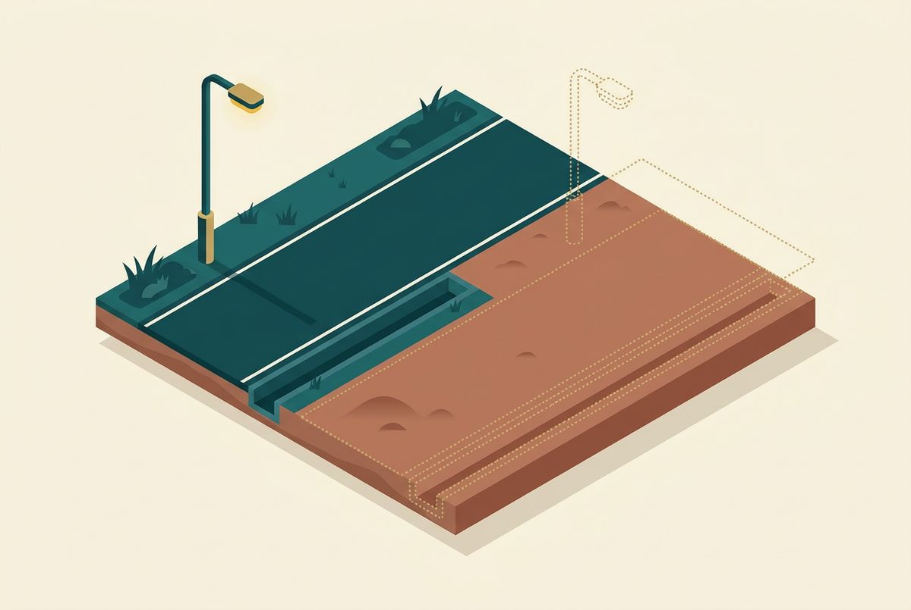

Home / Buyer Guide
What to Verify Before Buying a Plot in Tamil Nadu
A practical guide to the documents, approvals and on-ground details every buyer should check before signing.
Buying land can feel deeply personal. It may be the place where a home will stand, an asset built for the next generation or the beginning of a long-term plan. That is exactly why a plot should be evaluated with patience — not only by its location and price, but by the clarity of its documents, approvals and physical boundaries.
The safest approach is simple: verify the owner, verify the land, verify the layout and verify what exists on site. The following checklist will help you begin that process with better questions.
1. Confirm who has the right to sell the property
Start with the seller's identity and legal right over the land. Ask for the current title document and the earlier documents that show how ownership moved from one person to another. This is commonly called the chain of title or parent-document trail.
Key pointAsk for the full chain of title, not just the latest deed. Names, survey numbers, subdivision numbers and extents must stay consistent across every document, and a power of attorney must itself be verified.
Names, survey numbers, subdivision numbers and land extents should remain consistent across the documents. If the seller is acting through a power of attorney, the document and the authority it grants must also be verified. A property lawyer should examine the complete title trail rather than relying on a single deed.
2. Review the Encumbrance Certificate — but do not treat it as the whole answer
An Encumbrance Certificate, or EC, can reveal registered transactions affecting the property during the period searched. It is an important part of due diligence, but it is not a guarantee of perfect title. Unregistered claims, incomplete search periods or disputes may not appear in it.
Key pointAn Encumbrance Certificate shows registered transactions for the period searched. It does not reveal unregistered claims or disputes, so it supports a title check — it never replaces one.
Match the EC with the title documents and search it for an appropriately long period recommended by your lawyer. Any mortgage, attachment, prior sale or unexplained transaction should be investigated before you pay an advance.
3. Match the revenue and survey records
Ask for the relevant patta and survey records. Depending on the property and location, these may include the Field Measurement Book sketch, subdivision sketch or town-survey records. They help identify the recorded survey details and physical extent of the land.
Patta is a revenue record; it should not be treated as conclusive proof of ownership by itself. The details must be read together with the title documents, approved layout and actual site measurements.
4. Verify land use and layout approval
Check whether the land use permits the proposed development and whether the plotted layout has been approved by the competent planning authority. Outside the Chennai Metropolitan Area, the Directorate of Town and Country Planning and the relevant planning or local authority may be involved, depending on jurisdiction.
Key point“DTCP approved” in a brochure is a claim, not proof. Ask for the approval reference, date and sanctioned layout, and confirm your plot sits inside the approved boundary.
Do not accept the words "DTCP approved" only because they appear in a brochure. Ask for the approval reference, date and sanctioned layout. Verify the record through the appropriate official channel and confirm that the plot being offered is inside the approved boundary.
Tamil Nadu's DTCP buyer guidance specifically recommends checking the seller's right, patta, EC, layout approval, local-body sanction, road and park handover, and the applicable land-use zone.
5. Check whether TNRERA registration applies
The Real Estate (Regulation and Development) Act covers the development of land into plots for sale and generally requires applicable projects to be registered before they are advertised or sold. The Act also contains exemptions, and state rules and project circumstances matter.
Ask whether the project is registered with the Tamil Nadu Real Estate Regulatory Authority. If it is, search the registration number on the official TNRERA portal and compare the promoter name, survey details, approval documents, layout and declared timeline with the information you received.
If the promoter says registration is not required, ask for the legal basis and have it independently checked. Planning approval and RERA registration serve different purposes; one should not be presented as a substitute for the other.
6. Identify the exact plot on paper and on the ground
Your plot number, survey/subdivision number, dimensions, total area and boundaries should agree across the approved plan, allotment or sale agreement, draft sale deed and physical site.
Key pointPlot number, survey and subdivision number, dimensions and boundaries must agree across the approved plan, the agreement, the draft deed and the ground. Walk the boundary stones with a surveyor.
Visit the plot with a qualified surveyor where appropriate. Check the boundary stones, orientation, approach road and neighbouring parcels. A small mismatch on a plan can become a significant issue after registration or construction.
7. Confirm clear and legal access
A plot needs more than a visible path. Confirm that it has legally recognised access from a public road or through an approved internal road. Check the road width shown in the sanctioned plan and compare it with the condition on site.
Also ask whether layout roads and reserved park areas have been transferred to the relevant local body where required. Access rights, road ownership and right-of-way details should be clear in the documents — not left as a verbal assurance.
8. Separate existing infrastructure from future promises
Inspect what is actually available: internal roads, storm-water drainage, electricity provision, water arrangements, street lighting, boundary treatment and common areas. Then list what is still proposed.

Every promised development item should appear in the agreement, approved plan or other accountable project document with a realistic delivery commitment. A rendered image or sales message is not the same as an approved or completed facility.
9. Check dues, restrictions and disputes
Ask for evidence of relevant tax payments and confirm whether any loan, acquisition notice, court case, family claim, tenancy, easement or government restriction affects the property. Depending on the location, additional checks may be required for water bodies, environmentally sensitive land, highways or other regulated areas.
This is where independent legal and technical review becomes especially valuable. A clean-looking file is not enough if the survey history or site context tells a different story.
10. Read the payment and sale documents before paying
The booking form, agreement for sale, payment schedule and draft sale deed should identify the same plot and state the price, taxes or charges, development commitments, possession or handover terms, cancellation conditions and refund provisions.
Key pointWhere RERA applies, a promoter cannot take more than 10% of the plot cost before a written, registered agreement for sale. Urgency is never a reason to skip document review.
For projects to which RERA applies, the central Act says a promoter cannot accept more than 10% of the cost of the plot as an advance or application fee without first entering into a written and registered agreement for sale. Do not allow urgency to replace document review.
Pre-Purchase Checklist
Before you commit, be able to answer yes to each of these questions:
- Has an independent lawyer reviewed the complete title trail?
- Do the title deed, EC, patta and survey details refer to the same land?
- Is the layout approval authentic and does it cover this exact plot?
- Has the project's TNRERA position been independently verified?
- Do the approved plan, agreement and site measurements match?
- Is the access road legally and physically clear?
- Are infrastructure commitments documented?
- Are the total price, payment terms and registration conditions transparent?
The aim is not to make land buying complicated. It is to replace uncertainty with clarity. A responsible developer should welcome careful questions and make verification easier.
Frequently Asked Questions
No. Patta is an important revenue record, but it should be reviewed with the title deeds, EC, survey records and other legal documents. Obtain an independent title opinion before purchase.
Not by itself. An EC records certain registered transactions for the search period. It may not every unregistered claim, dispute or defect in title.
The RERA Act generally requires applicable real-estate projects to be registered before marketing or sale, but exemptions and project circumstances may apply. Verify the current position for the specific project on the official TNRERA portal and with a qualified professional.
Have the exact plot, title, approval status, agreement terms and seller's authority independently reviewed. For applicable RERA projects, also note the Act's rule regarding advances above 10% before a written registered agreement for sale.
Frequently Asked Questions
No. Patta is an important revenue record, but it should be reviewed with the title deeds, EC, survey records and other legal documents. Obtain an independent title opinion before purchase.
This article provides general educational information, not legal, financial or investment advice. Requirements vary by property, authority and date. Buyers should verify current official records and obtain independent advice from qualified legal, planning, surveying and tax professionals before making a purchase.
Keep Reading
Know the land
before you buy.
Three guides written for Tamil Nadu plot buyers — documents, approvals and how to read a plan.